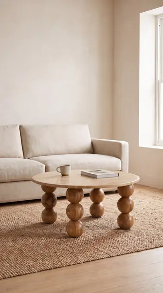

Round Travertine Side Table with Travatine Top Wooden Sphere Legs
Natural stone and wooden sphere legs
₹11,452
I feature a smooth, neutral-toned natural travertine stone top paired with solid wooden sphere legs. You can easily attach my legs at home using the included assembly sheet.
Smooth natural travertine stone top with subtle pattern variationsSolid wooden sphere legs with a sculptural stacked designKnock-down format with an assembly sheet included for setupLarge piece · delivery planned by call
Pairs well with
 Travertine End Table, brass rod
Travertine End Table, brass rod Travertine Accent Table, brass rod
Travertine Accent Table, brass rod
Travertine Coffee Table, sphere legsCare
Wipe stone surface with a soft damp cloth.
Delivery & returns
India only. Leaves Jodhpur in 7–15 business days. Large piece: we'll call to plan delivery. 7-day returns; report any damage within 48 hours.
Photos marked Concept image are AI-generated from the real product photos and checked for accuracy. Handmade, so each piece varies slightly.
Open in swipe view